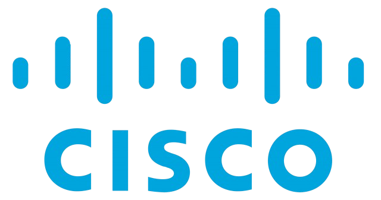
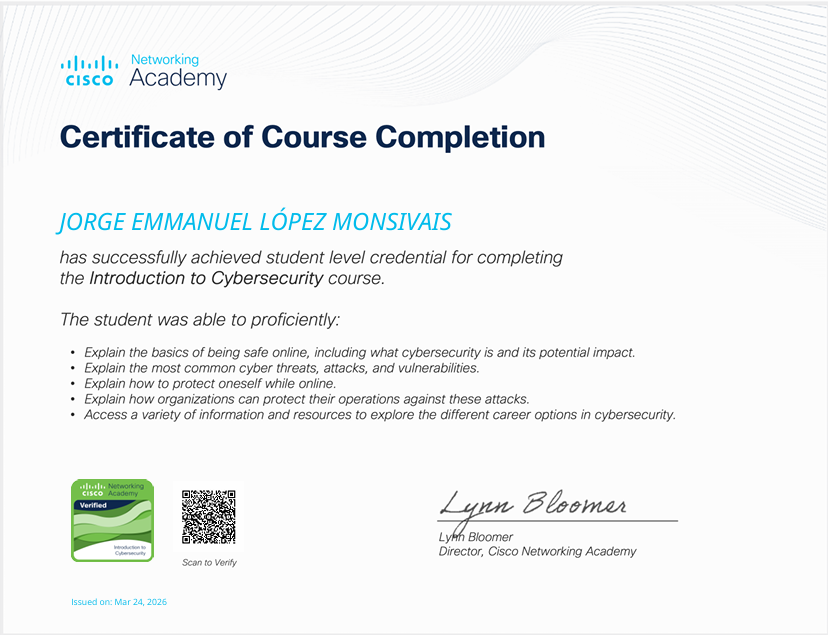

Tras completar el curso de Introducción a la Ciberseguridad de Cisco, me he dado cuenta de que la seguridad digital no es solo un conjunto de herramientas técnicas, sino una mentalidad crítica necesaria en la era de la hiperconectividad. Lo que más me impactó fue comprender la magnitud del panorama de amenazas actual; aprender sobre la tríada CIA (Confidencialidad, Integridad y Disponibilidad) me proporcionó el marco conceptual perfecto para evaluar cualquier riesgo. Ya no veo un simple correo electrónico o una actualización de software de la misma manera, sino como puntos críticos donde la información debe ser protegida contra actores malintencionados que utilizan desde ingeniería social hasta complejos ataques de malware. Uno de los puntos más destacables fue el estudio detallado de los diferentes tipos de ataques, como el phishing, ransomware y los ataques de denegación de servicio (DoS). Entender cómo operan los "hackers de sombrero negro" frente a los de "sombrero blanco" me ayudó a visualizar la ciberseguridad como un campo de batalla constante donde la prevención es la mejor defensa. Además, el curso hace un énfasis excelente en la seguridad organizacional, explicando cómo los cortafuegos, los sistemas de detección de intrusiones (IDS) y las políticas de contraseñas robustas forman capas de defensa que deben trabajar en armonía para salvaguardar los activos más valiosos de una empresa: sus datos. Finalmente, el aprendizaje sobre la protección de la identidad personal y la privacidad en línea fue sumamente práctico. Descubrir la importancia de la autenticación de dos factores (2FA) y el cifrado de datos me ha permitido fortalecer mi propia postura de seguridad. Me voy con la convicción de que la ciberseguridad es una responsabilidad compartida y una disciplina en evolución permanente. Este curso no solo me brindó conocimientos técnicos básicos, sino que despertó en mí un interés genuino por profundizar en áreas como la informática forense y la defensa de redes, sentando una base sólida para mi futuro profesional en el sector tecnológico..

Descargue el certificado aquí: Descargar | Badge de autenticidad: Verificar
Tras haber concluido el curso de Conceptos Básicos de Redes de Cisco, mi perspectiva sobre cómo funciona el mundo digital ha dado un giro de 180 grados. Lo que al principio parecía una red abstracta de cables y señales, ahora lo entiendo como un ecosistema perfectamente orquestado bajo el modelo OSI, un aprendizaje que considero el pilar fundamental de todo el trayecto. Comprender las siete capas no fue solo un ejercicio de memorización, sino la clave para realizar diagnósticos efectivos; ahora puedo visualizar desde el flujo de bits en la capa física hasta la interacción de los datos en la capa de aplicación, lo que facilita enormemente la resolución de problemas técnicos. Uno de los puntos más destacables fue la inmersión en el direccionamiento IPv4 e IPv6. Aprender a realizar el subneteado de redes me permitió entender cómo optimizar el tráfico y mejorar la seguridad dentro de una organización. El uso de herramientas de simulación, específicamente Cisco Packet Tracer, fue un factor diferenciador. No se trata solo de teoría; el poder diseñar una topología, configurar routers y switches de forma virtual, y ver cómo los paquetes viajan (o fallan) en tiempo real, me dio la confianza necesaria para enfrentarme a equipos físicos. Experimentar con protocolos como ICMP para verificar la conectividad mediante comandos de consola me hizo sentir que realmente tengo el control sobre la infraestructura. Finalmente, el curso enfatiza la importancia crítica de la seguridad desde los fundamentos. No basta con que los dispositivos se comuniquen; deben hacerlo de forma protegida. El aprendizaje sobre la configuración de contraseñas de consola, la seguridad en puertos de switch y la gestión de accesos remotos mediante SSH me dejó claro que un administrador de redes es, ante todo, un guardián de la integridad de la información. Me llevo una base técnica sólida, una mentalidad analítica para el troubleshooting y una motivación enorme para seguir escalando hacia certificaciones más avanzadas. Sin duda, este curso es el primer paso esencial para cualquiera que aspire a dominar la conectividad moderna.
El curso de Dispositivos de Red y Configuración Inicial de Cisco ha sido una experiencia fundamentalmente práctica que me ha permitido pasar de la teoría a la acción técnica directa. Lo que más destaco es la desmitificación del hardware de red; entender la diferencia operativa entre un hub, un switch y un router no solo de forma conceptual, sino a través de su comportamiento en el tráfico de datos, cambió por completo mi comprensión de la infraestructura. El aprendizaje sobre el arranque de un dispositivo Cisco y el papel crítico de la IOS (Internetwork Operating System) me proporcionó la base necesaria para navegar con fluidez por los distintos modos de comando, desde el modo usuario hasta el modo de configuración global. Un punto clave y sumamente gratificante fue dominar la CLI (Interfaz de Línea de Comandos). Aprender a asignar nombres de host, configurar banners de advertencia y, sobre todo, asegurar el acceso mediante el cifrado de contraseñas y la configuración de líneas VTY para SSH, me dio una visión real de las responsabilidades de un administrador. La implementación de direcciones IP en interfaces físicas y virtuales (SVI) y la verificación de la conectividad mediante comandos de diagnóstico como show ip interface brief y ping fueron ejercicios esenciales que transformaron el aprendizaje en una habilidad técnica tangible. Finalmente, el curso resalta la importancia de la documentación y la gestión de archivos de configuración. Entender la diferencia entre la startup-config y la running-config es una lección de supervivencia en el mundo de las redes; aprender a guardar y respaldar configuraciones es tan vital como la configuración misma. Me retiro de este curso con la capacidad técnica para sacar un dispositivo de su caja y ponerlo en funcionamiento de manera segura y eficiente, sintiéndome mucho más preparado para enfrentar escenarios de redes complejos y optimizar el rendimiento de la comunicación en entornos empresariales.
El curso de Seguridad en Terminales (Endpoint Security) de Cisco ha sido una de las etapas más reveladoras de mi formación, ya que desplaza el foco de la infraestructura central hacia el eslabón que suele ser el blanco principal de los ataques: el dispositivo del usuario final. Lo que más destaco de este aprendizaje es la comprensión profunda de que un terminal (ya sea una laptop, un servidor o un dispositivo móvil) es la última línea de defensa. Aprendí que la seguridad efectiva no depende de una sola herramienta, sino de una estrategia de defensa en profundidad, integrando firewalls basados en host, sistemas de prevención de intrusiones (HIPS) y el control de puertos físicos para mitigar riesgos desde el interior. Un punto técnico fundamental fue el estudio del malware y su comportamiento en el sistema de archivos. Analizar cómo operan los troyanos, rootkits y el ransomware me permitió valorar la importancia crítica de soluciones avanzadas como EDR (Endpoint Detection and Response). A diferencia de un antivirus tradicional que solo busca firmas conocidas, aprendí que la monitorización continua del comportamiento y el análisis de procesos en tiempo real son esenciales para detectar amenazas de "día cero". Además, la gestión de parches y la configuración de políticas de cumplimiento (compliance) se presentaron como tareas administrativas vitales para asegurar que ningún dispositivo vulnerable comprometa la integridad de toda la red corporativa. Finalmente, el curso enfatiza el papel de la criptografía y el control de acceso en los terminales. Entender la implementación de cifrado de disco completo y la gestión de identidades mediante servicios de directorio me dio una perspectiva clara sobre cómo proteger los datos incluso en caso de pérdida física del equipo. Me llevo una metodología rigurosa para realizar auditorías de seguridad en sistemas operativos y la capacidad de responder ante incidentes de manera estructurada. Este curso ha transformado mi perfil técnico, dándome las herramientas para diseñar entornos de trabajo mucho más resilientes y seguros frente a un panorama de amenazas que evoluciona cada segundo.
El curso de Administración de Amenazas Cibernéticas ha sido una experiencia avanzada que me ha permitido evolucionar de una postura de defensa pasiva a una de gestión proactiva y estratégica. Lo más destacable de este aprendizaje fue profundizar en la Inteligencia de Amenazas (Threat Intelligence); entender cómo recolectar, analizar y aplicar datos sobre actores de amenazas específicos para anticipar ataques antes de que ocurran. Aprendí que administrar amenazas no solo consiste en reaccionar ante alertas, sino en comprender las tácticas, técnicas y procedimientos (TTP) de los adversarios, lo que permite fortalecer las defensas de manera dirigida y eficiente, optimizando los recursos de seguridad de la organización. Un punto técnico fundamental fue la implementación y gestión de arquitecturas de seguridad modernas basadas en el modelo de Confianza Cero (Zero Trust). Durante el curso, exploramos cómo la segmentación de red, el control de acceso granular y la inspección continua del tráfico son vitales para mitigar el impacto de una intrusión. También fue clave el aprendizaje sobre el manejo de vulnerabilidades y su priorización; aprendí que no todas las debilidades representan el mismo riesgo y que una administración efectiva requiere correlacionar la criticidad técnica con el valor de los activos de negocio para decidir qué parchear o mitigar de forma inmediata. Finalmente, el curso puso un gran énfasis en la Resiliencia Cibernética y la respuesta ante incidentes a gran escala. Practicar el diseño de planes de recuperación y la coordinación de equipos bajo presión me dio una visión gerencial de la seguridad. Entender cómo la administración de amenazas se alinea con la continuidad del negocio me permitió ver la ciberseguridad como un facilitador estratégico y no solo como una barrera técnica. Me retiro con la capacidad de liderar procesos de detección temprana y respuesta ante amenazas persistentes avanzadas (APT), sintiéndome preparado para proteger infraestructuras críticas en un entorno digital cada vez más hostil.
Completar la Carrera Profesional de Analista Junior en Ciberseguridad ha sido el punto de inflexión donde todos mis conocimientos técnicos aislados se integraron en una metodología de trabajo profesional y estructurada. Lo más destacable de este programa es su enfoque en la operación diaria de un Centro de Operaciones de Seguridad (SOC); aprendí que ser un analista no solo trata de detener ataques, sino de entender el contexto de las alertas y gestionar el ciclo de vida de los incidentes. El dominio del modelo de la Cadena de Eliminación Cibernética (Cyber Kill Chain) y el marco MITRE ATT&CK me proporcionó una hoja de ruta clara para identificar en qué etapa se encuentra un adversario y cómo interrumpir sus acciones de manera efectiva. Un pilar fundamental de esta carrera fue el análisis de registros y el monitoreo de eventos. Trabajar con herramientas de gestión de eventos e información de seguridad (SIEM) me permitió desarrollar una agudeza visual para detectar anomalías en medio de grandes volúmenes de datos. Aprendí a correlacionar eventos de firewalls, sistemas de detección de intrusiones y registros de terminales para reconstruir la cronología de un ataque. Además, el curso profundizó en la importancia del análisis forense básico y la preservación de la evidencia, habilidades cruciales para asegurar que cualquier respuesta a incidentes sea técnicamente sólida y legalmente válida. Finalmente, esta trayectoria reforzó mi comprensión sobre el cumplimiento normativo y los estándares internacionales como ISO 27001. Entender que la ciberseguridad es un proceso de mejora continua basado en la gestión de riesgos cambió mi enfoque de uno puramente reactivo a uno proactivo. Me siento plenamente capacitado para desempeñar tareas de monitoreo, clasificación de vulnerabilidades y respuesta inicial ante amenazas, con una base sólida en la comunicación técnica y la documentación de hallazgos. Esta carrera ha transformado mi perfil, dándome la confianza necesaria para integrarme en equipos de seguridad de alto nivel y proteger la continuidad operativa de cualquier organización.
Haber cursado el programa de Hacker Ético ha sido, sin duda, la experiencia más desafiante y fascinante de mi formación en ciberseguridad, ya que me obligó a cambiar radicalmente mi perspectiva: para defender un sistema, primero debo aprender a pensar como quien intenta vulnerarlo. Lo más destacable de este trayecto fue dominar las fases estructuradas de un ataque ético, comenzando por el Reconocimiento y Footprinting. Entender que la fase de recolección de información pasiva y activa es donde se gana o se pierde una auditoría me enseñó a ser meticuloso en el uso de herramientas como Nmap y buscadores especializados para identificar vectores de ataque antes de realizar cualquier acción intrusiva. Un punto técnico fundamental fue la inmersión en la Explotación de Vulnerabilidades. A diferencia de otros cursos, aquí no solo aprendí a identificar fallos, sino a entender la mecánica detrás de un buffer overflow o una inyección SQL. El uso de frameworks como Metasploit y el manejo de terminales en Kali Linux me permitieron ejecutar pruebas de penetración controladas, comprendiendo la importancia crítica de la Post-explotación. Aprender a realizar movimientos laterales y escalada de privilegios dentro de una red me dejó claro que un sistema es tan fuerte como su eslabón más débil, y que una configuración errónea en un servicio menor puede comprometer todo un dominio corporativo. Finalmente, el curso refuerza que la diferencia entre un ciberdelincuente y un profesional es la ética y el reporte. No basta con encontrar la vulnerabilidad; el verdadero valor del hacker ético reside en su capacidad para documentar hallazgos y proponer medidas de mitigación efectivas alineadas con marcos de trabajo profesionales. Me retiro con una base sólida en el análisis de vulnerabilidades web, redes inalámbricas y técnicas de ingeniería social, pero sobre todo, con un compromiso inquebrantable hacia la legalidad y la integridad. Este curso ha sido el puente definitivo para integrar mis conocimientos técnicos en una metodología de defensa proactiva y profesional.